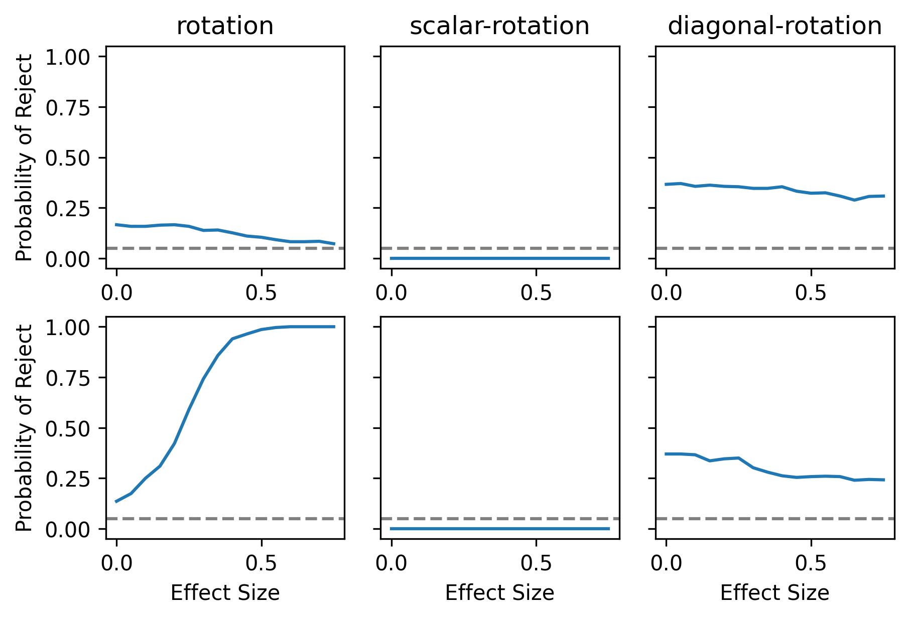

Show code cell content
from itertools import product
import graspologic as gp
import matplotlib.pyplot as plt
import numpy as np
from graspologic.embed import AdjacencySpectralEmbed, OmnibusEmbed
from graspologic.plot import heatmap
from graspologic.simulations import p_from_latent, sample_edges
from joblib import Parallel, delayed
from pkg.inference.vertex_position_test import *
from pkg.inference.vertex_position_test import _bootstrap, _difference_norm, _embed
Show code cell content
def compute_delta(p, eps):
delta = ((p + eps) ** 2 - p**2) / p
return delta
def sample_latent(n, p, eps, seed=None):
ps = np.repeat(p, n).reshape(-1, 1)
X = np.sqrt(ps)
delta = compute_delta(p, eps)
delta_vec = np.zeros((n, 1))
delta_vec[0, 0] += delta
Y = np.sqrt(ps + delta_vec)
return X, Y
def sample_graphs(n, p, eps, seed=None):
X, Y = sample_latent(n=n, p=p, eps=eps, seed=seed)
P_X = gp.simulations.p_from_latent(X)
P_Y = gp.simulations.p_from_latent(Y)
np.random.seed(seed)
A = gp.simulations.sample_edges(P_X)
B = gp.simulations.sample_edges(P_Y)
return A, B
def experiment(n, p, eps, test_case='rotation', alpha=0.05, n_reps=500, n_jobs=-1):
def worker(seed):
A, B = sample_graphs(n, p, eps, seed)
_, pval, _, _ = vertex_position_test(A, B, n_components=2,test_case=test_case, n_bootstraps=500) # rank 2 p matrix
return pval.reshape(-1, 1)
res = Parallel(n_jobs=n_jobs)(delayed(worker)(seed) for seed in range(n_reps))
pvals = np.hstack(res)
return pvals
n = 100
p = 0.25
eps = np.linspace(0, 0.75, 16)
test_cases = ["rotation", "scalar-rotation", "diagonal-rotation"]
n_reps = 500
args = [dict(n=n, p=p, test_case=t, eps=e) for t, e in product(test_cases, eps)]
res = []
for arg in args:
# print(f"Running args: {arg}")
res.append(experiment(**arg))
res_dict = {}
for i in range(len(res)):
arg = args[i]
r = res[i]
key = arg['test_case'] +"_" + str(arg['eps'])
res_dict[key] = (r <= 0.05).mean(axis=1)
fig, ax = plt.subplots(figsize=(6, 4), dpi=300, ncols = 3, nrows=2, sharey=True, constrained_layout=True)
for idx, test_case in enumerate(test_cases):
power = []
effect_size= []
for key in res_dict.keys():
if test_case == key.split("_")[0]:
power.append(res_dict[key])
effect_size.append(key.split("_")[1])
vertex_changed = [p[0] for p in power]
vertex_control = [p[1] for p in power]
ax[0, idx].plot(eps, vertex_control)
ax[1, idx].plot(eps, vertex_changed)
ax[0, idx].axhline(0.05, ls='--', alpha=0.5, c='k')
ax[1, idx].axhline(0.05, ls='--', alpha=0.5, c='k')
ax[0, idx].set(title=test_case)
ax[0, 0].set(ylabel="Probability of Reject")
ax[1, 0].set(ylabel="Probability of Reject")
for i in range(3):
ax[1, i].set(xlabel='Effect Size')
# ax[0, 0].yaxis.tick_right()
# ax.yaxis.set_label_position("right")
ax[0, -1].set(label="Unchanged Vertex")
ax[1, -1].set(label="Changed Vertex")
ax[0, -1].yaxis.set_label_position("right")

import pickle
with open("../results/outputs/2022-09-14-vertex-two-sample.pkl", 'wb') as f:
pickle.dump(res_dict, f)
Try different bootstraps#
x = np.random.normal(size=(10, 2))
idx = np.random.permutation(10)
x[idx]
array([[ 1.06262908, 0.6640431 ],
[-0.22037341, 0.96321091],
[-0.83853075, -1.61187109],
[ 1.48144014, -0.47746846],
[-0.38636561, -1.31219507],
[ 0.45159684, 0.81404667],
[-0.61306382, 0.18412894],
[ 1.57017925, -1.4981266 ],
[-2.1701255 , 0.45554627],
[-1.4089585 , 0.95142513]])
x
array([[-2.1701255 , 0.45554627],
[ 1.48144014, -0.47746846],
[ 0.45159684, 0.81404667],
[-1.4089585 , 0.95142513],
[-0.38636561, -1.31219507],
[ 1.57017925, -1.4981266 ],
[-0.83853075, -1.61187109],
[ 1.06262908, 0.6640431 ],
[-0.61306382, 0.18412894],
[-0.22037341, 0.96321091]])
idx
array([7, 9, 6, 1, 4, 2, 8, 5, 0, 3])
x[7]
array([1.06262908, 0.6640431 ])